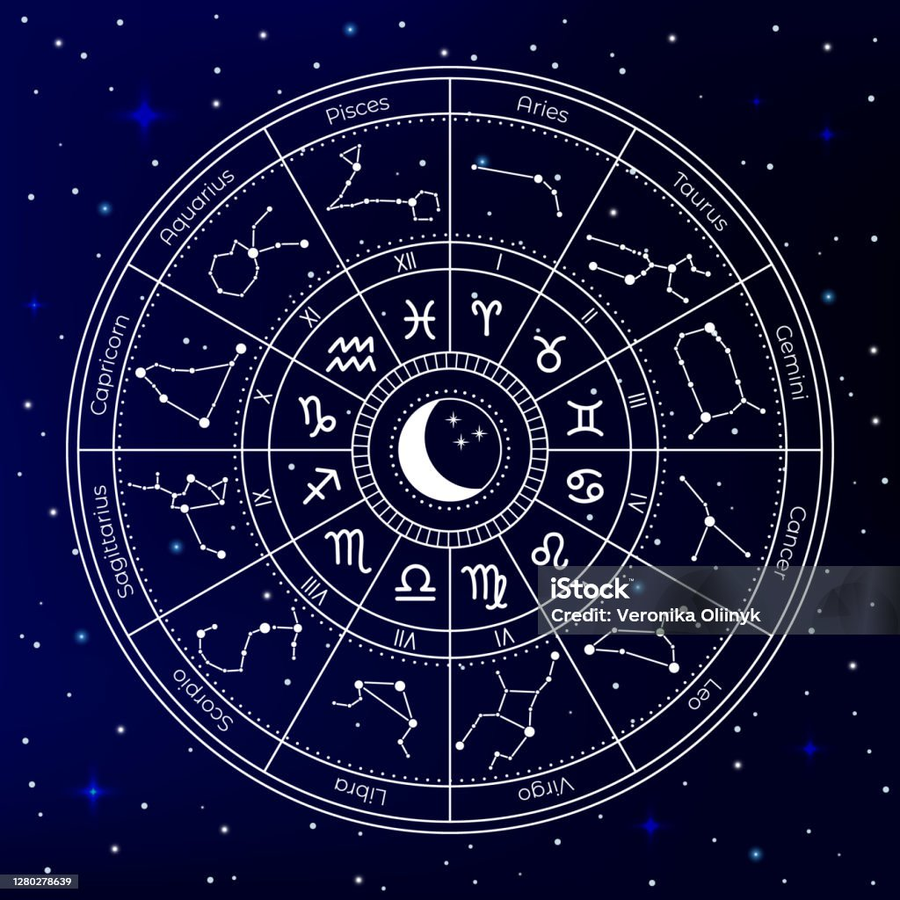
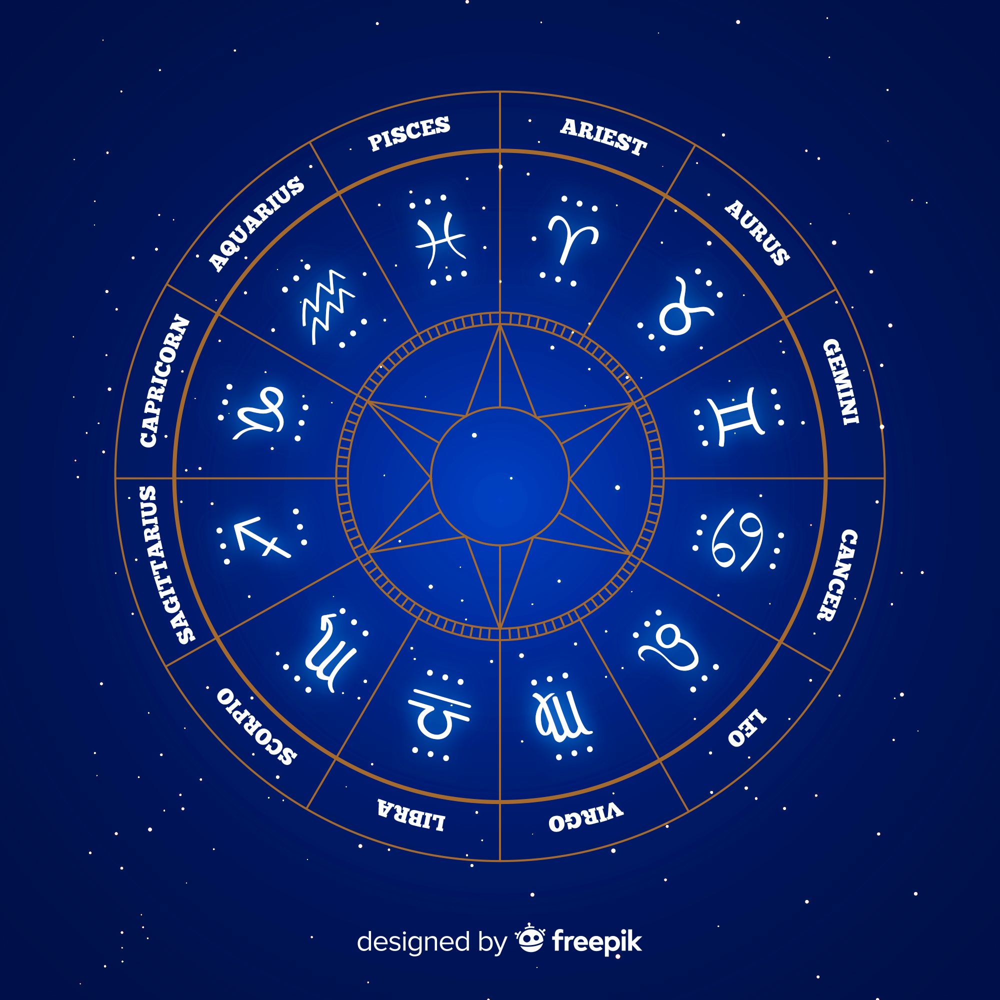

Numerology Services
Discover how numbers influence your life path, personality, and destiny

Lucky Number Analysis
Discover your personal lucky numbers based on your birth date and name, and learn how to use them to enhance positive energies in your life.

Name Numerology
Analysis of your name's numerical value and its influence on your personality, career, relationships, and overall life path.

Name Correction
Personalized recommendations for name modifications or spelling changes to create more harmonious numerical vibrations aligned with your birth path.